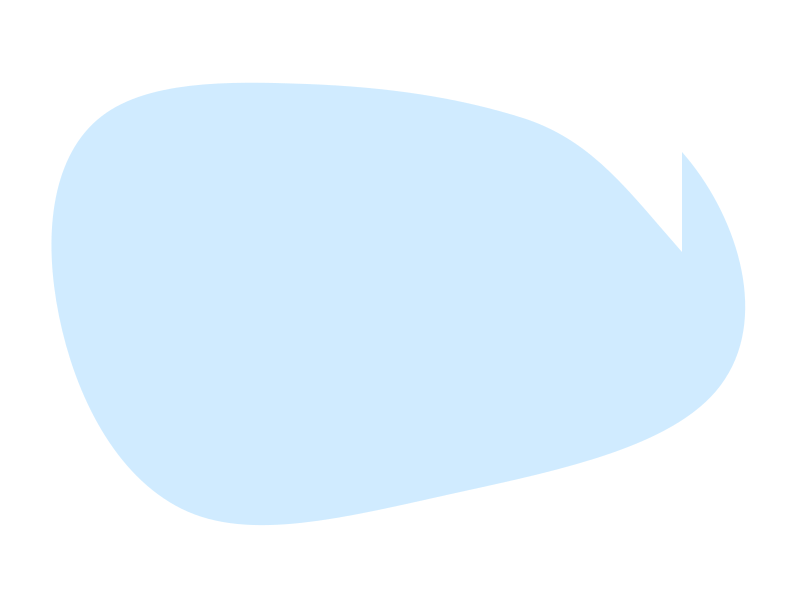

Techdle: Hardware
Descubra o componente comparando colunas (Tipo, Conexão, Função, Energia, etc.). Digite para filtrar e aprenda com o feedback.

O Techdle é um hub de jogos educativos. Hoje você já pode jogar o Techdle: Hardware. Em breve, teremos Redes, Programação e Algoritmos — todos usando os mesmos componentes de UI e lógica modular.
Descubra o componente comparando colunas (Tipo, Conexão, Função, Energia, etc.). Digite para filtrar e aprenda com o feedback.
Topologias, protocolos e dispositivos de rede — mesmos componentes de comparação, novo conjunto de dados.
Paradigmas, estruturas de dados e sintaxe em diferentes linguagens — jogue para fixar conceitos.
Complexidade, famílias de algoritmos e aplicações práticas — formato de comparação + dicas pedagógicas.
UI, lógica e dados separados em módulos reutilizáveis. Cada jogo reaproveita utils, ui, logic, data e state.
Cada tema (Hardware, Redes, etc.) usa seu próprio JSON, mantendo o contrato de colunas/feedback.
Feedback por coluna (acerto, parcial, erro) e, futuramente, explicações curtas para reforço do aprendizado.